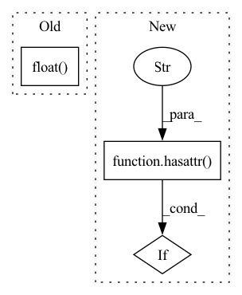

Pattern ID :30953
Before Change
prediction_scores = self.lm_head(masked_output)
masked_lm_loss = F.cross_entropy(
prediction_scores.view(-1, self.config.vocab_size), masked_lm_labels.view(-1)
).float()
return (masked_lm_loss,)
else:
return super().forward(
input_ids=input_ids, attention_mask=attention_mask, labels=labels, return_dict=FalseAfter Change
outputs = self.roberta(input_ids, attention_mask=attention_mask)
sequence_output = outputs[0]
if hasattr( self.config, "max_num_masked_tokens" ) :
// Select only the masked tokens for the classifier
labels, positions = torch.topk(labels, k=self.config.max_num_masked_tokens, dim=1)
sequence_output = self.gather_indices(sequence_output, positions)In pattern: SUPERPATTERN
Frequency: 3
Non-data size: 3
Instances Fragment ID: 91020476
Project Name: huggingface/optimum-graphcore
Commit Name: 066b742fa0859d8862a26e13d86b439a7acb561e
Time: 2022-09-13
Author: jincheng@graphcore.ai
File Name: optimum/graphcore/models/roberta/modeling_roberta.py
M Class Name: PipelinedRobertaForMaskedLM
N Class Name: PipelinedRobertaForMaskedLM
M Method Name: forward(4)
N Method Name: forward(4)
M Parent Class: PipelineMixin,RobertaForMaskedLM
N Parent Class: PipelineMixin,RobertaForMaskedLM
M File Name: optimum/graphcore/models/roberta/modeling_roberta.py
N File Name: optimum/graphcore/models/roberta/modeling_roberta.py
M Start Line: 169
M End Line: 177
N Start Line: 166
N End Line: 176
Before Change
try:
param_norm = float(torch.norm(p, norm_type, dtype=torch.float32))
except TypeError as err:
param_norm = float(torch.norm(p.float() , norm_type))
//param_norm = p.data.float().norm(norm_type)
total_norm += param_norm**norm_type
After Change
tensor_mp_rank = bwc_tensor_model_parallel_rank(mpu=mpu)
for p in parameters:
// Pipeline parallelism may replicate parameters. Avoid multi-counting.
if hasattr( p, "ds_pipe_replicated" ) and p.ds_pipe_replicated:
continue
// Filter to avoid over-counting replicated tensors from tensor Fragment ID: 91020477
Project Name: microsoft/deepspeed
Commit Name: e2fdd254edff5780d00c04111572c913ee698719
Time: 2021-09-29
Author: jerasley@microsoft.com
File Name: deepspeed/runtime/utils.py
M Class Name: AnonimousClass
N Class Name: AnonimousClass
M Method Name: get_weight_norm(3)
N Method Name: get_weight_norm(3)
M Parent Class:
N Parent Class:
M File Name: deepspeed/runtime/utils.py
N File Name: deepspeed/runtime/utils.py
M Start Line: 403
M End Line: 437
N Start Line: 500
N End Line: 529
Before Change
if mpu is not None:
if (mpu.get_model_parallel_rank() == 0
) or is_model_parallel_parameter(p):
param_norm = p.grad.data.float() .norm(norm_type)
total_norm += param_norm.item()**norm_type
else:
param_norm = p.grad.data.float().norm(norm_type)After Change
tensor_mp_rank = bwc_tensor_model_parallel_rank(mpu=mpu)
for p in parameters:
// Pipeline parallelism may replicate parameters. Avoid multi-counting.
if hasattr( p, "ds_pipe_replicated" ) and p.ds_pipe_replicated:
continue
// Filter to avoid over-counting replicated tensors from tensor Fragment ID: 91020480
Project Name: microsoft/deepspeed
Commit Name: e2fdd254edff5780d00c04111572c913ee698719
Time: 2021-09-29
Author: jerasley@microsoft.com
File Name: deepspeed/runtime/utils.py
M Class Name: AnonimousClass
N Class Name: AnonimousClass
M Method Name: get_grad_norm(3)
N Method Name: get_grad_norm(3)
M Parent Class:
N Parent Class:
M File Name: deepspeed/runtime/utils.py
N File Name: deepspeed/runtime/utils.py
M Start Line: 346
M End Line: 371
N Start Line: 397
N End Line: 426